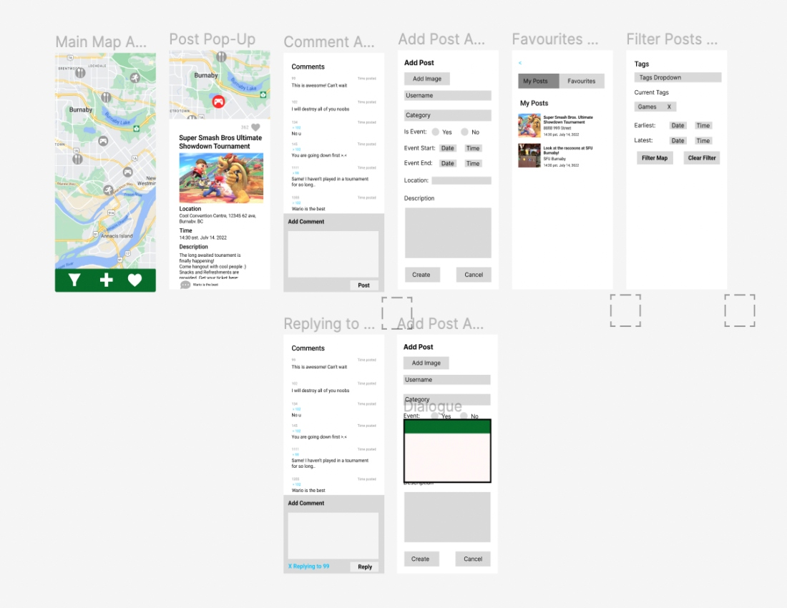
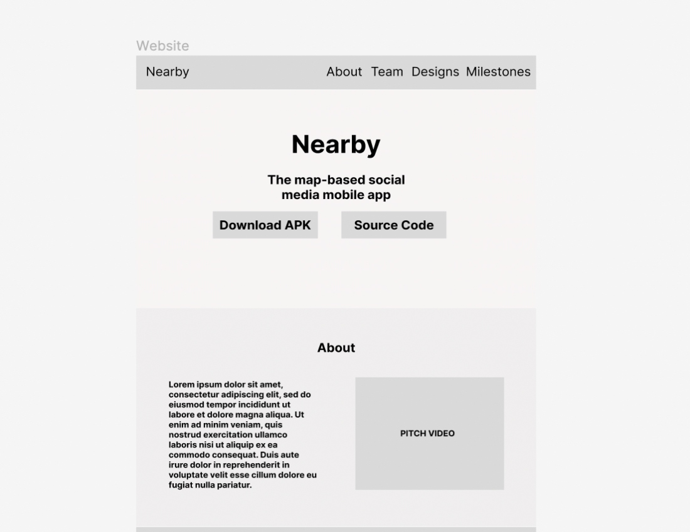

Nearby
The map-based social media Android app
About
Nearby is our new Map-Oriented social media application. Where users can post their own events/pictures as clickable pins on a main map page for other users to see. Users can then discuss or reply to comments about those location pictures/event posts in their dedicated comment forum. Users can filter posts by distance, time, and interest to find nearby events or posts of their interests!
Meet the Team
Larren Canapi
Role: Android/Website Developer
Show and Tell 1 Work: Developed the Nearby Project Team's Website to display all of the project team's content and links for Show and Tell 1. Planned to work on the Google Maps and FireBase integration of the mobile app.
Show and Tell 2 Work: Helped setup Firebase into the app and worked on the feature of adding new posts from the app to the Firestore collection. Implemented favouriting posts and saving them locally with Shared Preferences. Updated the project webpage with Show and Tell 2 content. Planned to work on more FireBase integration and UI improvements of the mobile app.
Art Yang
Role: Android/UI Developer
Show and Tell 1 Work: Android developer who has completed the Map and Comments UI to display post icons and comments for Show and Tell 1. Planned to work on the Google Maps and FireBase integration of the mobile app.
Show and Tell 2 Work: Helped setup Firebase into the app and incorporating the viewmodel interactions. Implemented adding and replying to comments from the app to the Firestore collection. Incorporated the Flow Coroutine library for async database functions and started work on the post filter functionality for the app. Planned to work on more FireBase integration and UI improvements of the mobile app.
Alex Cho
Role: Android/UI Developer
Show and Tell 1 Work: Android developer who has completed the Post Filter and the Detail's Fragment UI to show a post's information for Show and Tell 1. Planned to work on the Google Maps and FireBase integration of the mobile app.
Show and Tell 2 Work: Added icon and colour support for the posts and post form creation in the app and helped to create the post details fragment to display the post data in the app. Planned to work on more FireBase integration and UI improvements of the mobile app.
Greg Parent
Role: Android/UI Developer
Show and Tell 1 Work: Android developer who has completed Favourites Activity UI for posts and the Add Post Form UI for Show and Tell 1. Planned to work on the Google Maps and FireBase integration of the mobile app.
Show and Tell 2 Work: Worked on app UI changes and drawing pin posts on the map from the Firebase Collection. Implemented uploading and downloading images from created posts using Firebase storage. Incorporated the displaying of post detail content into the correct pin fragment. Planned to work on more FireBase integration and UI improvements of the mobile app.
Project Designs
MVVM Diagram

Thread Diagram
UI Design/Mockup
Mobile App Figma
Webpage Figma
Milestones
Show and Tell 1
The main goal for Show and Tell 1 was to have an almost completed UI for the Nearby Android App. Currently, the app should allow users to navigate through the UI and will let them interact with some hardcoded data. We have hardcoded map posts on the Map UI so you can currently see what the pin and post will look like conceptually and the comment forum of that pin. Other than the Android app itself, we have also finished the main structure of our project webpage, the UI mockups in Figma, and the MVVM Diagram.
Show and Tell 2 Plans
The main plan for Show and Tell 2 will be to have the Firebase integration working so we can have our Firebase database setup. This will allow the user's posts and comments to be stored remotely on a Firebase server that user can then retrieve. We aim to have this work smoothly with our Google Maps display to show the posts of the user's interests.
Show and Tell 2
The main goal for Show and Tell 2 was to setup Firebase and have it work with a good majority of our app's planned features. Currently, our app allows users to create posts which are stored remotely in Firebase. These stored posts can then be viewed on the map as actual custom pins we have created which are designated by colour and the activity type. By clicking on a pin, you can see all of that pin's post details along with an image that is stored on Firebase Storage and you can click the heart to favourite that post to increment their favourite's counter. By clicking the comment button, you can view all the comments on the post and add your own comments or reply to someone else's to get a discussion going.
During this time, we have also created our Threads Diagram which we will try to follow closely and have updated the project webpage with up to date content for Show and Tell 2
Final Submission Plans
For our final submission, we plan on finishing up our posts filter and our post category feature. In addition, we want to allow our users easy access to posts they've favourited by adding a favourite posts and user made posts page. Finally, we want to do updates to our UI design to make it cleaner and include a custom app icon.